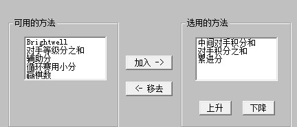

2010年全国五子棋公开赛快讯13——男子组最终成绩
#1 2010年全国五子棋公开赛快讯13——男子组最终成绩 作者：我是裁判 发表时间：2010-6-17 13:02:58
名次 姓名 积分 对手分 中间分 赢棋数1 戴晓涵, (3) 7.5 53.0 42.0 6
2 蔡力捷, (55) 7 48.5 38.5 5
3 谭鑫麟, (4) 6.5 53.0 41.5 5
4 朱建锋, (30) 6.5 49.5 39.0 4
5 林金顺, (41) 6.5 49.5 38.5 5
6 贺启发, (2) 6.5 47.5 36.5 6
7 韦振强, (46) 6.5 46.5 35.5 5
8 陈靖, (37) 6.5 43.5 33.5 6
9 艾显平, (1) 6 50.5 40.0 4
10 祁观, (24) 6 50.0 39.5 5
11 刘超, (15) 6 44.0 33.5 6
12 梅凡, (56) 6 42.5 33.0 6
13 陈新, (58) 6 41.5 32.5 6
14 李磊, (7) 5.5 49.5 40.0 4
15 张轶峰, (27) 5.5 45.5 36.5 5
16 林越, (39) 5 49.5 39.0 4
17 谢维祥, (40) 5 49.5 37.5 3
18 奚振扬, (44) 5 46.5 36.0 4
19 汪清清, (47) 5 43.5 34.5 5
20 许国昌, (21) 5 43.0 34.0 5
21 周光乐, (33) 5 42.5 32.5 4
22 卢先耀, (20) 5 41.5 33.5 5
23 葛凌峰, (42) 5 40.0 31.0 4
24 丁配龙, (32) 5 39.5 30.0 5
25 罗峥, (34) 5 38.5 30.0 5
26 谭志锋, (31) 5 37.0 28.5 5
27 顾炜, (5) 4.5 50.0 39.0 2
28 张纪国, (57) 4.5 42.5 32.5 3
29 卓淼军, (19) 4.5 42.0 33.0 4
30 朱相如, (35) 4.5 41.5 32.0 3
31 潘仲良, (29) 4.5 40.0 31.0 4
32 王俊波, (38) 4.5 38.0 
#2 Re:2010年全国五子棋公开赛快讯13——男子组最终成绩 作者：松痕 发表时间：2010-6-17 13:22:23
13点慢讯#3 Re:2010年全国五子棋公开赛快讯13——男子组最终成绩 作者：周光乐 发表时间：2010-6-17 15:34:32
 果然很快
果然很快
#4 Re:2010年全国五子棋公开赛快讯13——男子组最终成绩 作者：天使玉儿 发表时间：2010-6-17 15:35:50
某某人 在前三名 兴奋。。。
#5 Re:2010年全国五子棋公开赛快讯13——男子组最终成绩 作者：小丸.net 发表时间：2010-6-17 15:53:52
终于公布了凑字#6 Re:2010年全国五子棋公开赛快讯13——男子组最终成绩 作者：庞德 发表时间：2010-6-17 15:58:31
漂亮的成绩。。。#7 Re:2010年全国五子棋公开赛快讯13——男子组最终成绩 作者：岳麓小棋后 发表时间：2010-6-17 16:20:12
恭喜戴先生
#8 Re:2010年全国五子棋公开赛快讯13——男子组最终成绩 作者：屏蔽 发表时间：2010-6-17 16:30:50
#9 Re:2010年全国五子棋公开赛快讯13——男子组最终成绩 作者：我是裁判 发表时间：2010-6-17 16:54:03
SP98软件认为轮空和对手弃权取胜不计胜局，朱有一轮对手弃权#10 Re:2010年全国五子棋公开赛快讯13——男子组最终成绩 作者：黄药师 发表时间：2010-6-17 17:26:24

对手分 中间分 赢棋数 一般比赛是设置这三个嘛？其他的呢？
［此帖子已被 黄药师 在 2010-6-17 17:27:11 编辑过］
#11 Re:2010年全国五子棋公开赛快讯13——男子组最终成绩 作者：萱萱 发表时间：2010-6-17 21:53:14
 他们都好棒～～
他们都好棒～～
#12 Re:2010年全国五子棋公开赛快讯13——男子组最终成绩 作者：水月 发表时间：2010-6-17 22:58:23
朱建锋应该是5胜3和，输给菜宝宝1盘。